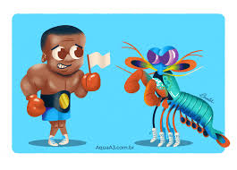
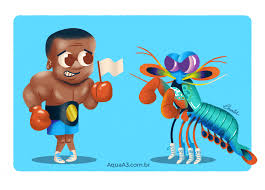
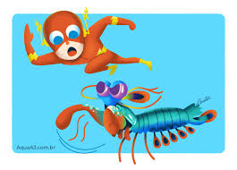
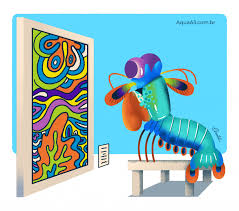

Stomatopoda (Odontodactylus scyllarus)
Os crustáceos estomatópodes (camarões mantis) possuem um sistema visual incrivelmente complexo, composto por olhos compostos que contêm mais tipos de fotorreceptores do que em qualquer outro animal conhecido. O arsenal óptico do olho do camarão mantis inclui capacidade de localização monocular, visão de cores de 12 canais, detecção de polarização linear de 2 canais e, em algumas espécies, a capacidade de detectar e analisar luz polarizada circularmente. Subjacente a esse conjunto incomparável de capacidades funcionais está uma diversificação estrutural de uma unidade fotorreceptiva básica comum a todos os olhos compostos, o omatídio.
Fatos sobre o Stomatopoda
Comportamento Social
 

Os Odontodactylus scyllarus são animais que apresentam comportamentos sociais muito variados, desde ameaças visuais contra predadores até comportamentos de côrte. De acordo com a anatomia da sua pata raptorial é possível distinguir entre dois grupos funcionais, as perfuradoras (spearers) ou as esmagadoras (smashers), sendo que cada um dos tipos apresenta sua própria variação comportamental e até mesmo de habitat.
Tem um dos golpes mais rápidos do reino animal
São capazes de desferir um dos mais rápidos e violentos golpes do reino animal, um soco que pode apresentar a velocidade de um tiro calibre .22 (equivalente a 720km/h) e uma força de impacto de 60 kg/cm².
Possui 12 a 16 fotorreceptores
A maioria das pessoas tem três tipos de células de detecção de luz, ou fotorreceptores, que são sensíveis à luz vermelha, verde e azul. Mas o camarão mantis tem de 12 a 16 fotorreceptores diferentes em sua banda média. A maioria das pessoas presume que elas devem ser realmente boas em ver uma ampla gama de cores - uma “ bomba termonuclear de luz e beleza ”, como disse o Oatmeal.